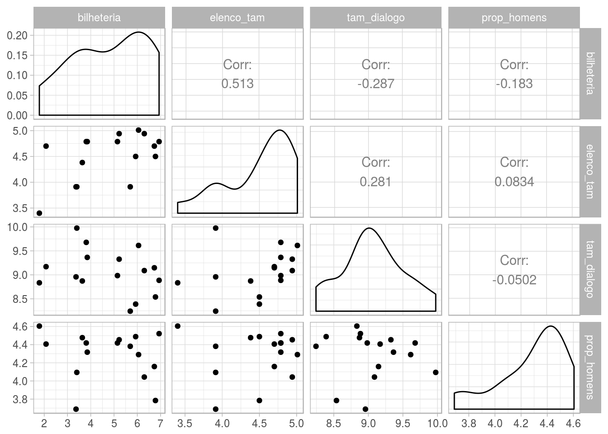
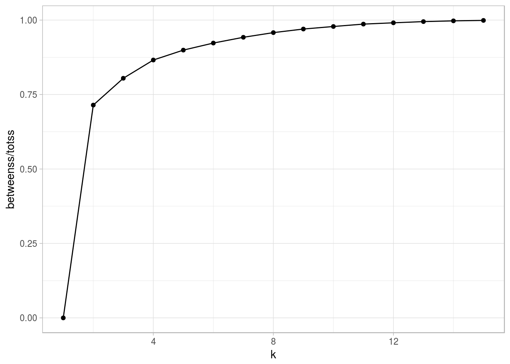
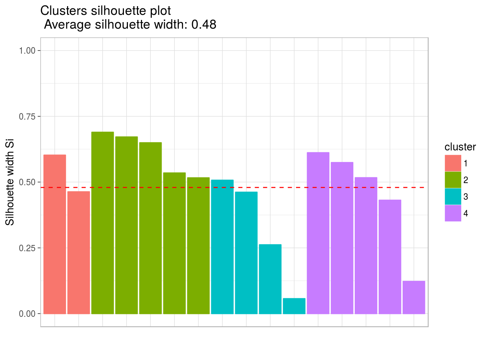
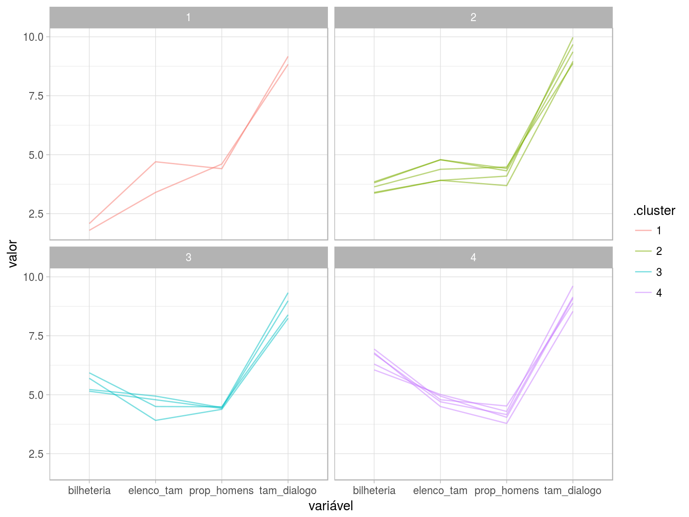

Ítalo Batista


library(tidyverse, warn.conflicts = F)library(rvest)
library(plotly)
library(cluster)
library(ggdendro)
library(ggfortify)
library(broom)
library(GGally)
library(reshape2)
library(gridExtra)
library(factoextra)
library(here)
theme_set(theme_light())Esta análise, realizada no contexto da disciplina Análise de Dados 1 (Computação @ UFCG), tem por objetivo identificar agrupamentos em dados sobre quantidade de falas dos personagens de diferentes gêneros em filmes de hollywood. Essa análise serve de mote para trabalharmos com algumas técnicas de agrupamento de múltiplas (> 2) dimensões utilizando a técnica k-means.
Os dados aqui utilizados foram organizados por Matthew Daniels e estão disponíveis aqui.
Nesta análise, fazemos um recorte no tempo. Não utilizaremos todos os filmes, mas apenas aqueles que fazem parte do período de tempo conhecido como Era de ouro de Hollywood, da década de 20 até o fim dos anos 60’s.
characters = read_csv(here::here("data/character_list5.csv"))
big_data = read_csv(here::here("data/meta_data7.csv")) %>% na.omit()data_golden_age = big_data %>% filter(year < 1970) %>% select(script_id, title, gross)
characters_golde_age = characters %>% filter(script_id %in% data_golden_age$script_id) %>% select(-c(age))Vamos agrupar os filmes segundo as seguintes variáveis:
Primeiro, vamos organizar o os dados de modo a obter essas variáveis.
Calculando o número de personagens por filme:
elenco = characters_golde_age %>%
group_by(script_id) %>%
summarise(elenco_tam = n())Calculando a quantidade de palavras no filme, para ter uma ideia da quantidade de diálogos no filme:
tam_dialogo = characters_golde_age %>%
group_by(script_id) %>%
summarise(tam_dialogo = sum(words))Calculando a proporção de homens
homens = characters_golde_age %>%
filter(gender == "m") %>%
group_by(script_id) %>%
summarise(n_homens = n())
homens = full_join(homens, elenco, by="script_id")
homens$prop_homens = round(homens$n_homens / homens$elenco_tam, digits=2)Organizando essas informações:
d = data_golden_age
d = full_join(d, homens, by="script_id")
d = full_join(d, tam_dialogo, by="script_id") %>% select(-n_homens)
names(d)[3] = "bilheteria"Deste modo, temos os seguintes dados:
head(d)## # A tibble: 6 x 6
## script_id title bilheteria elenco_tam prop_homens tam_dialogo
## <int> <chr> <int> <int> <dbl> <int>
## 1 625 2001: A Space O… 376 9 0.890 4401
## 2 7075 El Dorado 47 12 0.750 11660
## 3 8521 Frankenstein 298 5 0.800 3799
## 4 3016 Ninotchka 45 12 0.830 15949
## 5 4745 On the Waterfro… 185 14 0.860 11231
## 6 4791 Planet of the A… 172 12 0.830 7974Cada observação é um filme, que possui um id (script_id), o título do filme (title), bilheteria corrigida (gross), tamanho do elenco (elenco_tam), proporção de homens no elenco (prop_homens), soma do número de palavras ditas por todos as personagens do filme (tam_dialogo).
d %>% select(-title, -script_id) %>% summary()## bilheteria elenco_tam prop_homens tam_dialogo
## Min. : 6.0 Min. : 3.000 Min. :0.4000 Min. : 3799
## 1st Qu.: 36.0 1st Qu.: 7.250 1st Qu.:0.6300 1st Qu.: 7062
## Median : 178.5 Median :11.000 Median :0.8100 Median : 8414
## Mean : 309.6 Mean : 9.812 Mean :0.7475 Mean : 9587
## 3rd Qu.: 455.8 3rd Qu.:12.000 3rd Qu.:0.8650 3rd Qu.:11338
## Max. :1029.0 Max. :15.000 Max. :1.0000 Max. :21480É possível perceber que as variáveis são bastante assimétricas. Vamos transformá-las de modo a termos um intervalo próximo entre elas, mas preservando proporcionalmente as diferenças entre filmes. Isos nos ajudará a criar melhores visualizações dos grupos.
d.temp = d
d.temp$prop_homens = d.temp$prop_homens * 100
d.temp$elenco_tam = d.temp$elenco_tam * 10
d.scaled = d.temp %>%
select(title, bilheteria, elenco_tam, tam_dialogo, prop_homens) %>%
mutate_each(funs(log), 2:5)## `mutate_each()` is deprecated.
## Use `mutate_all()`, `mutate_at()` or `mutate_if()` instead.
## To map `funs` over a selection of variables, use `mutate_at()`Vamos visualizar como os dados transformados se comportam:
d.scaled %>% select(-title) %>% ggpairs()
Como nossos dados contêm poucos filmes (17 apenas), não conseguimos identificar agrupamentos bem definidos de duas dimensões. Os dados parecem estar bem dispersos. Vamos proceder com o agrupamento de 4 dimensões utilizando o algoritmo kmeans, de modo a identificar grupos de filmes da era de ouro segundo as quatro as variáveis organizadas acima.
O k-means é um método de agrupamento que objetiva particionar n observações dentre k grupos onde cada observação pertence ao grupo mais próximo da média.
O K-Means busca minimizar a distância dos elementos a um conjunto de k centros de forma iterativa. A distância entre um ponto e um conjunto de clusters é definida como sendo a distância do ponto ao centro mais próximo dele.
O algoritmo do K-Means pode ser descrito da seguinte maneira:
Normalmente, o usuário que decide quantos grupos (k=número de grupos) gostaria que o k-means pudesse identificar. Isto costuma ser um problema, tendo em vista que normalmente não se sabe quantos clusters existem a priori.
A seguinte visualização pode nos ajudar:
set.seed(24)
explorando_k = tibble(k = 1:15) %>%
group_by(k) %>%
do(
kmeans(select(d.scaled, -title),
centers = .$k,
nstart = 20) %>% glance()
)
explorando_k %>%
ggplot(aes(x = k, y = betweenss / totss)) +
geom_line() +
geom_point()
A ideia do gráfico acima é: um número k de grupos será uma boa escolha enquanto a linha crescer. No momento em que a linha começar a cresce de maneira não significativa, então k já não será um bom número de grupos.
Podemos então escolher k = 4 ou 5 ou 6… Vamos escolher k = 4, ou seja, vamos usar o k-means para identificar 4 grupos.
set.seed(24)
n_clusters = 4
km = d.scaled %>%
select(-title) %>%
kmeans(centers = n_clusters, nstart = 20)Vamos plotar um gráfico silhueta para identificar a qualidade do agrupamento.
## cluster size ave.sil.width
## 1 1 2 0.53
## 2 2 5 0.61
## 3 3 4 0.32
## 4 4 5 0.45
Como nenhuma barra cresce se extende o lado negativo (para baixo), então nenhum grupo (diferenciados pelas cores) tem pontos que se aproximam mais de outros grupos do que do seu próprio. Os clusters foram bem definidos.
Organizando os dados segundo os grupos identificados:
d.scaled.km.long = km %>%
augment(d.scaled) %>%
gather(key = "variável",
value = "valor",
-title, -.cluster)Visualizando os grupos:
d.scaled.km.long %>%
ggplot(aes(x=`variável`, y=valor, group=title, colour=.cluster)) +
geom_line(alpha = .5) +
facet_wrap(~ .cluster) 
Vamos identificar esses grupos!
Primeiro vemos que a proporção de personagens homens e de diálogos não se diferencia muito entre os grupos. Então vamos focar mais em tamanho do elenco e bilheteria :)